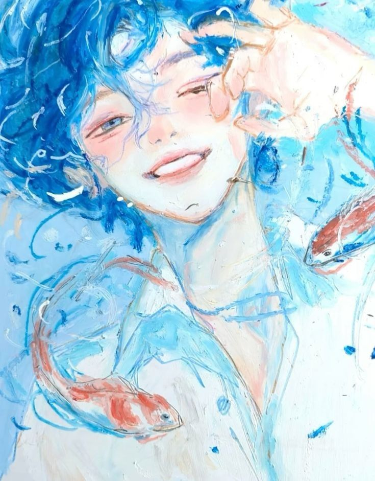

So mesmerising
I’m a better person with her. She has the softest eyes, doe barely covers it she looks like an angel. It’s not quite drowning, it doesnt feel like drownign with her but it feels like cotton in my ears and Her eyes god her eyes. Theyre soft downy feathers, brown with their specks of gray and black. It’s comfort and pillowy cushioning. It feels like coming home, it feels like swimming among the clouds. I want to hold her, god i want to hold her so bad. I want quiet afternoons with her snoring into my shoulder on the couch. It’s a dream, i know its dangerous to dream when i wont get the chance to make it reality anytime soon but god i want. People have been saying I’ve become more like you, I cant see it, I cant see how i could possibly be like you, but When i struggle to get out of bed in the morning, when my bones ache and my soul slumbers. The thing that gets me up, the thing that motivates me, is you. I have to work, I have to achieve I have to strive, because I want you to be proud. I want to catch up to you and your greatness, I want to run beside you. I want you to look at me and be happy to call me yours. God i want.